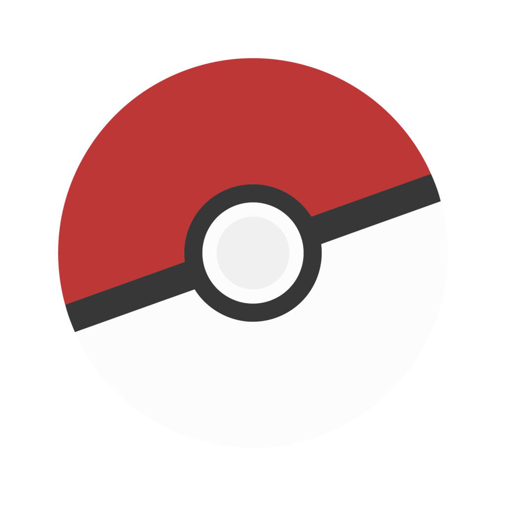

<nav class="navbar is-danger">
  <div class="navbar-brand">
    <a class="navbar-item" href="#">
      
    </a>
    <div class="navbar-burger burger" data-target="navbarExampleTransparentExample">
      <span></span>
      <span></span>
      <span></span>
    </div>
  </div>

  <div id="navbarExampleTransparentExample" class="navbar-menu">
    <div class="navbar-start">
      <a class="navbar-item" href="#">
        Home
      </a>
    </div>

    <div class="navbar-end">
      <div class="navbar-item">
        <div class="field is-grouped">
          <p class="control">
            <a class="bd-tw-button button is-info" data-social-network="Twitter" data-social-action="tweet"
              href="https://twitter.com/its1300">
              <span class="icon">
                <i class="fab fa-twitter"></i>
              </span>
              <span>
                Twitter
              </span>
            </a>
          </p>
          <p class="control">
            <a class="button is-dark" href="https://github.com/LeoTrujillo/pokedex.angular.io">
              <span class="icon">
                <i class="fab fa-github"></i>
              </span>
              <span>Github</span>
            </a>
          </p>
        </div>
      </div>
    </div>
  </div>
</nav>
